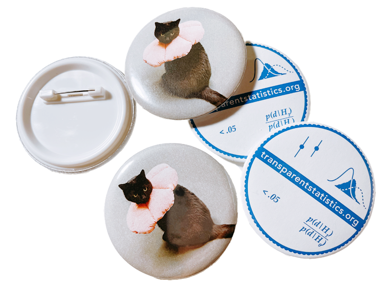

Instructors: Abhraneel Sarma, Chat Wacharamanotham, Fumeng Yang, and Maryam Hedayati
Transparent research practices enable the research design, materials, analytic methods, and data to be thoroughly evaluated and potentially reproduced. This course presents current best practices and tools for increasing research transparency. After the course, we expect the participants to be able to get started on improving their own research practices, assessing research transparency in articles they read and review. Toward these goals, we design this course with the following specific learning outcomes: The course participants…
Time: Monday, October 23, 2023: 2:00 PM-5:00 PM AEDT (Room 103)
As a participant of this tutorial, you can get free kitty or logo buttons! (limited numbers)

2:00 - 3:15 PM: Planning, analyzing, and sharing quantitative research
3:15 - 3:30 PM: A short break and social activities
3:30 - 5:00 PM: Introduction to Transparency-oriented Visualizations
Abhraneel Sarma is a Ph.D. candidate at Northwestern University. His research interests include studying how people make decisions using visualizations, and how visualizations can be used for improving statistical analysis or reporting statistical results. In addition, he has studied how users implement certain aspects of Bayesian models and has developed tools for conducting multiverse analysis which is an approach for more transparent statistical research.
Chat Wacharamanotham is a lecturer at Swansea University and a mandated instructor at the University of Zurich. The focus of his work is on understanding and developing tools for planning, reporting, reading, and sharing quantitative research. He is also a co-organizer of the Transparent Statistics in HumanComputer Interaction group and the Dagstuhl Seminar on Transparent Quantitative Research as a User Interface Problem. He has seven years of experience teaching a research method course for graduate students.
Fumeng Yang is a postdoctoral fellow at Northwestern University. Her recent research focuses on uncertainty visualizations for the general public and user modeling through statistical and machine learning models. She co-instructed the precedent series of the proposed course.
Maryam Hedayati is a PhD student in Computer Science & Learning Sciences at Northwestern University. Her current research focuses on visualization literacy, and the development of expertise in data visualization. She is also interested in teaching more generally, particularly teaching introductory computer science and data visualization. She first learned about open science and transparent statistics in her undergraduate psychology courses, and is interested in increasing and promoting transparency of research in visualization.